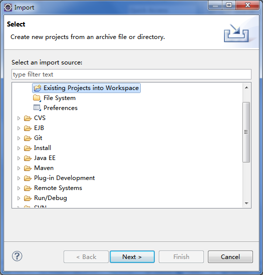
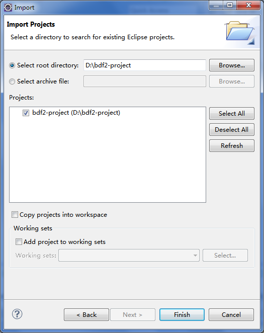
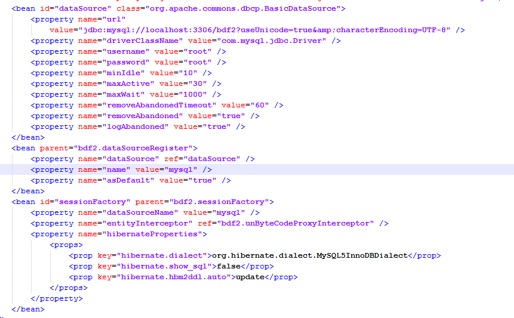

生成BDF2项目后怎么办？
步骤一、解压生成的BDF2项目到指定的目录。
步骤二、打开eclipse，选择菜单【File】-->【Import】，如下图所示。

步骤三、选择 Existing Projects into WorkSpance 资源目录,点击【Next】按钮，如下图所示。

步骤四、点击【Browse...】按钮，选择解压后的BDF2项目，然后点击【Finish】按钮，这样就完成了导入工作。
步骤五、配置数据源，默认生成的BDF2项目采用HSQL数据库，不需要配置即可运行，如果采用其他数据库，可以修改/WEB-INF/dorado-home/datasource.xml文件，如下图为mysql5数据源配置。
注意: 修改数据源的时候不仅要修改url和driver,还需要将hibernate.dialect修改为对应数据库类型的方言
